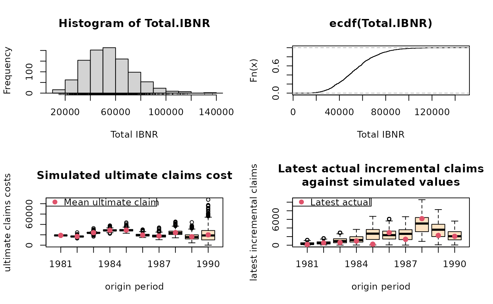

Bootstrap-Chain-Ladder Model
BootChainLadder.RdThe BootChainLadder procedure provides a predictive
distribution of reserves or IBNRs for a cumulative claims development triangle.
Usage
BootChainLadder(Triangle, R = 999, process.distr=c("gamma", "od.pois"))Arguments
- Triangle
cumulative claims triangle. Assume columns are the development period, use transpose otherwise. A (mxn)-matrix \(C_{ik}\) which is filled for \(k \le n+1-i; i=1,\ldots,m; m\ge n \). See
qpaidfor how to use (mxn)-development triangles with m<n, say higher development period frequency (e.g quarterly) than origin period frequency (e.g accident years).- R
the number of bootstrap replicates.
- process.distr
character string indicating which process distribution to be assumed. One of "gamma" (default), or "od.pois" (over-dispersed Poisson), can be abbreviated
Details
The BootChainLadder function uses a two-stage
bootstrapping/simulation approach. In the first stage an ordinary
chain-ladder methods is applied to the cumulative claims triangle.
From this we calculate the scaled Pearson residuals which we bootstrap
R times to forecast future incremental claims payments via the
standard chain-ladder method.
In the second stage we simulate the process error with the bootstrap
value as the mean and using the process distribution assumed.
The set of reserves obtained in this way forms the predictive distribution,
from which summary statistics such as mean, prediction error or
quantiles can be derived.
Value
BootChainLadder gives a list with the following elements back:
- call
matched call
- Triangle
input triangle
- f
chain-ladder factors
- simClaims
array of dimension
c(m,n,R)with the simulated claims- IBNR.ByOrigin
array of dimension
c(m,1,R)with the modeled IBNRs by origin period- IBNR.Triangles
array of dimension
c(m,n,R)with the modeled IBNR development triangles- IBNR.Totals
vector of R samples of the total IBNRs
- ChainLadder.Residuals
adjusted Pearson chain-ladder residuals
- process.distr
assumed process distribution
- R
the number of bootstrap replicates
References
England, PD and Verrall, RJ. Stochastic Claims Reserving in General Insurance (with discussion), British Actuarial Journal 8, III. 2002
Barnett and Zehnwirth. The need for diagnostic assessment of bootstrap predictive models, Insureware technical report. 2007
Author
Markus Gesmann, markus.gesmann@gmail.com
Note
The implementation of BootChainLadder follows closely the
discussion of the bootstrap model in section 8 and appendix 3 of the
paper by England and Verrall (2002).
See also
See also
summary.BootChainLadder,
plot.BootChainLadder displaying results and finally
CDR.BootChainLadder for the one year claims development result.
Examples
# See also the example in section 8 of England & Verrall (2002) on page 55.
B <- BootChainLadder(RAA, R=999, process.distr="gamma")
B
#> BootChainLadder(Triangle = RAA, R = 999, process.distr = "gamma")
#>
#> Latest Mean Ultimate Mean IBNR IBNR.S.E IBNR 75% IBNR 95%
#> 1981 18,834 18,834 0 0 0 0
#> 1982 16,704 16,859 155 652 178 1,282
#> 1983 23,466 24,181 715 1,377 1,245 3,277
#> 1984 27,067 28,876 1,809 1,938 2,794 5,327
#> 1985 26,180 29,141 2,961 2,407 4,225 7,562
#> 1986 15,852 19,593 3,741 2,405 5,040 8,129
#> 1987 12,314 17,869 5,555 3,079 7,216 11,322
#> 1988 13,112 24,403 11,291 4,994 14,483 20,588
#> 1989 5,395 16,649 11,254 5,846 14,720 21,178
#> 1990 2,063 19,367 17,304 13,232 24,814 41,457
#>
#> Totals
#> Latest: 160,987
#> Mean Ultimate: 215,771
#> Mean IBNR: 54,784
#> IBNR.S.E 18,765
#> Total IBNR 75%: 65,718
#> Total IBNR 95%: 88,689
plot(B)

# Compare to MackChainLadder
MackChainLadder(RAA)
#> MackChainLadder(Triangle = RAA)
#>
#> Latest Dev.To.Date Ultimate IBNR Mack.S.E CV(IBNR)
#> 1981 18,834 1.000 18,834 0 0 NaN
#> 1982 16,704 0.991 16,858 154 143 0.928
#> 1983 23,466 0.974 24,083 617 592 0.959
#> 1984 27,067 0.943 28,703 1,636 713 0.436
#> 1985 26,180 0.905 28,927 2,747 1,452 0.529
#> 1986 15,852 0.813 19,501 3,649 1,995 0.547
#> 1987 12,314 0.694 17,749 5,435 2,204 0.405
#> 1988 13,112 0.546 24,019 10,907 5,354 0.491
#> 1989 5,395 0.336 16,045 10,650 6,332 0.595
#> 1990 2,063 0.112 18,402 16,339 24,566 1.503
#>
#> Totals
#> Latest: 160,987.00
#> Dev: 0.76
#> Ultimate: 213,122.23
#> IBNR: 52,135.23
#> Mack.S.E 26,880.74
#> CV(IBNR): 0.52
quantile(B, c(0.75,0.95,0.99, 0.995))
#> $ByOrigin
#> IBNR 75% IBNR 95% IBNR 99% IBNR 99.5%
#> 1981 0.000 0.000 0.000 0.000
#> 1982 178.034 1282.020 2851.610 3405.381
#> 1983 1245.434 3277.178 5679.379 6520.127
#> 1984 2793.801 5327.128 8005.265 9125.041
#> 1985 4225.317 7562.318 9965.134 10705.455
#> 1986 5039.651 8128.650 10645.276 11061.928
#> 1987 7216.445 11322.129 14832.035 16076.345
#> 1988 14482.772 20588.338 24843.592 25819.938
#> 1989 14719.772 21178.008 28770.128 29696.122
#> 1990 24813.779 41456.890 57026.016 62042.240
#>
#> $Totals
#> Totals
#> IBNR 75%: 65717.50
#> IBNR 95%: 88689.32
#> IBNR 99%: 105149.34
#> IBNR 99.5%: 108226.14
#>
# fit a distribution to the IBNR
library(MASS)
plot(ecdf(B$IBNR.Totals))
# fit a log-normal distribution
fit <- fitdistr(B$IBNR.Totals[B$IBNR.Totals>0], "lognormal")
fit
#> meanlog sdlog
#> 10.849413945 0.363508428
#> ( 0.011500898) ( 0.008132363)
curve(plnorm(x,fit$estimate["meanlog"], fit$estimate["sdlog"]), col="red", add=TRUE)
 # See also the ABC example in Barnett and Zehnwirth (2007)
A <- BootChainLadder(ABC, R=999, process.distr="gamma")
A
#> BootChainLadder(Triangle = ABC, R = 999, process.distr = "gamma")
#>
#> Latest Mean Ultimate Mean IBNR IBNR.S.E IBNR 75% IBNR 95%
#> 1977 762,544 762,544 0 0 0 0
#> 1978 889,022 903,565 14,543 5,121 17,365 23,564
#> 1979 1,019,932 1,057,614 37,682 8,009 42,909 51,739
#> 1980 1,002,134 1,066,289 64,155 9,914 70,328 81,643
#> 1981 1,002,194 1,102,632 100,438 11,934 108,015 122,448
#> 1982 944,614 1,088,412 143,798 13,651 152,130 166,815
#> 1983 895,700 1,106,450 210,750 16,750 221,486 240,695
#> 1984 1,024,228 1,410,135 385,907 24,722 402,909 426,411
#> 1985 1,173,448 1,937,840 764,392 37,077 789,266 825,763
#> 1986 1,011,178 2,372,499 1,361,321 59,998 1,399,814 1,466,041
#> 1987 496,200 2,688,348 2,192,148 113,000 2,261,242 2,387,752
#>
#> Totals
#> Latest: 10,221,194
#> Mean Ultimate: 15,496,328
#> Mean IBNR: 5,275,134
#> IBNR.S.E 170,635
#> Total IBNR 75%: 5,380,780
#> Total IBNR 95%: 5,555,749
plot(A, log=TRUE)
# See also the ABC example in Barnett and Zehnwirth (2007)
A <- BootChainLadder(ABC, R=999, process.distr="gamma")
A
#> BootChainLadder(Triangle = ABC, R = 999, process.distr = "gamma")
#>
#> Latest Mean Ultimate Mean IBNR IBNR.S.E IBNR 75% IBNR 95%
#> 1977 762,544 762,544 0 0 0 0
#> 1978 889,022 903,565 14,543 5,121 17,365 23,564
#> 1979 1,019,932 1,057,614 37,682 8,009 42,909 51,739
#> 1980 1,002,134 1,066,289 64,155 9,914 70,328 81,643
#> 1981 1,002,194 1,102,632 100,438 11,934 108,015 122,448
#> 1982 944,614 1,088,412 143,798 13,651 152,130 166,815
#> 1983 895,700 1,106,450 210,750 16,750 221,486 240,695
#> 1984 1,024,228 1,410,135 385,907 24,722 402,909 426,411
#> 1985 1,173,448 1,937,840 764,392 37,077 789,266 825,763
#> 1986 1,011,178 2,372,499 1,361,321 59,998 1,399,814 1,466,041
#> 1987 496,200 2,688,348 2,192,148 113,000 2,261,242 2,387,752
#>
#> Totals
#> Latest: 10,221,194
#> Mean Ultimate: 15,496,328
#> Mean IBNR: 5,275,134
#> IBNR.S.E 170,635
#> Total IBNR 75%: 5,380,780
#> Total IBNR 95%: 5,555,749
plot(A, log=TRUE)
 ## One year claims development result
CDR(A)
#> IBNR IBNR.S.E CDR(1)S.E CDR(1)75% CDR(1)95%
#> 1977 0.00 0.000 0.000 0.00 0.00
#> 1978 14543.01 5121.357 5121.357 17365.21 23564.06
#> 1979 37682.38 8009.445 6318.026 41460.23 48203.42
#> 1980 64155.22 9913.702 7232.855 68384.80 77119.49
#> 1981 100437.52 11934.458 7941.154 105574.76 114056.86
#> 1982 143797.79 13651.016 9014.625 149612.10 160049.00
#> 1983 210749.87 16750.453 10763.102 218032.86 230032.23
#> 1984 385906.65 24721.767 14870.078 395374.24 411310.69
#> 1985 764392.36 37076.932 26032.324 781650.86 810121.67
#> 1986 1361321.21 59997.532 44049.285 1391888.03 1436466.94
#> 1987 2192147.92 112999.935 94568.492 2247883.16 2359993.56
#> Total 5275133.96 170635.278 132979.490 5355231.17 5504235.31
## One year claims development result
CDR(A)
#> IBNR IBNR.S.E CDR(1)S.E CDR(1)75% CDR(1)95%
#> 1977 0.00 0.000 0.000 0.00 0.00
#> 1978 14543.01 5121.357 5121.357 17365.21 23564.06
#> 1979 37682.38 8009.445 6318.026 41460.23 48203.42
#> 1980 64155.22 9913.702 7232.855 68384.80 77119.49
#> 1981 100437.52 11934.458 7941.154 105574.76 114056.86
#> 1982 143797.79 13651.016 9014.625 149612.10 160049.00
#> 1983 210749.87 16750.453 10763.102 218032.86 230032.23
#> 1984 385906.65 24721.767 14870.078 395374.24 411310.69
#> 1985 764392.36 37076.932 26032.324 781650.86 810121.67
#> 1986 1361321.21 59997.532 44049.285 1391888.03 1436466.94
#> 1987 2192147.92 112999.935 94568.492 2247883.16 2359993.56
#> Total 5275133.96 170635.278 132979.490 5355231.17 5504235.31